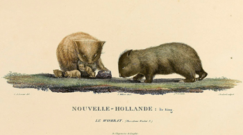

 The common wombat (Vombatus ursinus), also called bare-nosed wombat or coarse-haired wombat, is one of three living wombat species. The common wombat reaches an average of 98 cm in length and weights 26 kg. It was first described by George Shaw in 1800.
There exist three subspecies of the common wombat: